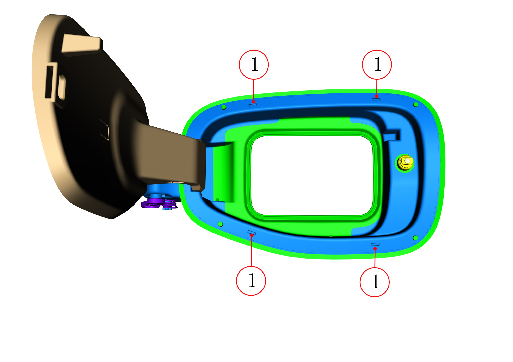

Открыть крышку лючка зарядного гнезда;
С помощью тонкой плоской отвертки проткнуть 4 технологических отверстия для демонтажа в позиции 1, нажать отверткой вниз на два фиксатора коробки фиксатора крышки зарядного гнезда в верхней части, отогнуть отверткой вверх два фиксатора в нижней части и одновременно с усилием извлечь узел коробки фиксатора крышки зарядного гнезда

Установка в целом выполняется в обратном порядке, инструменты не требуются: вставить конец шарнира узла коробки фиксатора крышки зарядного гнезда между крылом и зарядным розеткой, отрегулировать нижнюю мягкую резину, создающую помехи между узлом коробки фиксатора и розеткой, в завершение совместить ограничительную структуру узла коробки фиксатора с крылом и задвинуть до щелчка; после установки последовательно нажать на 4 технологических отверстия для демонтажа, убедившись в надежности фиксации, и отрегулировать зазор между зарядным гнездом и крылом.